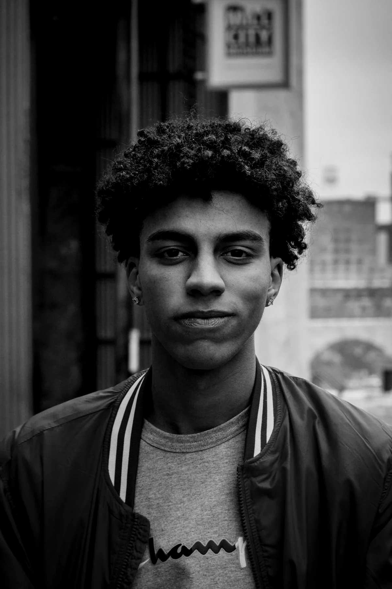

Projekt koncept / 03
MIRAKoncept portfolioje për fotograf
Portfolio e qetë për një fotograf portretesh — e ndërtuar që puna të flasë e para.
 MIRA / Koncepti 03
MIRA / Koncepti 03
01 / Përmbledhje
Puna, me
hapësirë për të marrë frymë.
Portfolio nuk është galeri e gjithçkaje. Është një radhitje — dhe radhitja është vetë mesazhi.
MIRA është studio e trilluar portretesh. Portfolio e trajton ekranin si mur galerie: fotot vijnë me ritmin e tyre, përshkrimet janë të qeta dhe ndërfaqja kurrë nuk konkurron me fytyrën.
Një sistem njëngjyrësh e mban përvojën bashkë, duke i lënë çdo portreti prezencën e vet. Seritë dhe vëllimet i japin formë punës pa e kthyer në rrjet miniaturash. Në telefon, radhitja bëhet një lëvizje e vetme poshtë. Informacioni për porosi vjen në fund, pasi puna të ketë lënë përshtypje.
Qëllimi i dizajnit
Blloqet asimetrike të fotove dhe pak lloje shkronjash krijojnë ritëm. Përshkrimet janë në shkronja mono anash, si shënime me laps. Faqosja nuk i mbush të gjitha kolonat, por e përdor hapësirën bosh si pjesë të kompozimit.
Fotot para së gjithash
Çdo vendim i ndërfaqes i nënshtrohet madhësisë, prerjes dhe radhitjes.
Navigim i qetë
Etiketa të vogla dhe një indeks i thjeshtë e mbajnë orientimin të qartë pa shtuar zhurmë.
Seri, jo foto të veçuara
Puna grupohet në vëllime, që vizitorët ta lexojnë si tërësi e jo si rrjedhë postimesh.
02 / Pamja në ekrane
Një ide, e njëjtë
në çdo ekran.
Faqosja është menduar si një sistem i vetëm, jo si faqe kompjuteri e ngjeshur në telefon. Rendi, ritmi dhe karakteri ruhen nga ekrani i gjerë deri te 390 piksel.


03 / Gjuha vizuale
Njëngjyrëshe,
me ngrohtësi.
Boja dhe kocka u japin fotove një skenë neutrale. Hiri i ngrohtë e mban faqen larg ndjesisë klinike; e bardha ruhet për vetë punën.
Faces, in between.
Të gjitha shkronjat ruhen në këtë faqe dhe përdoren njësoj në koncept dhe në faqe.
04 / Detajet
Portrete me
pak heshtje.
Dy studime nga e njëjta seri, me prerje të ndryshme, që tregojnë si radhitja dhe madhësia e ndryshojnë leximin e një fytyre.

Fotot janë ilustruese dhe përdoren sipas licencës përkatëse. Asnjë foto nuk paraqet punë për klient.

Fillo një projekt